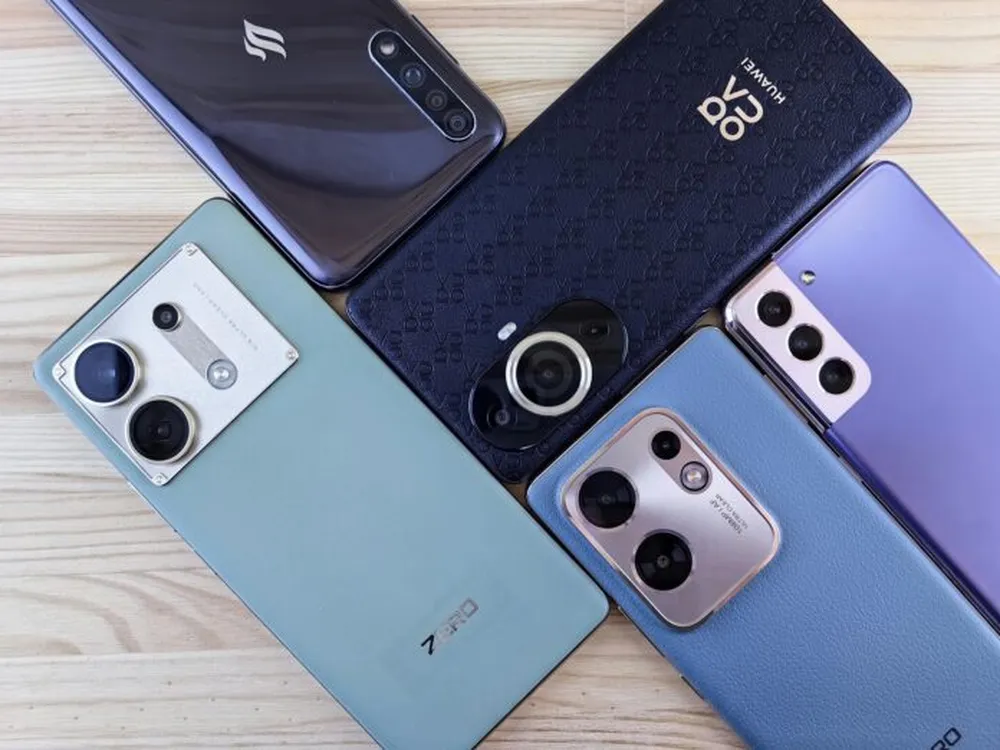
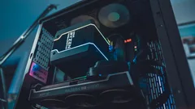
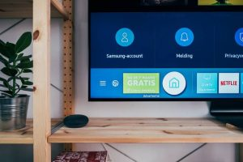
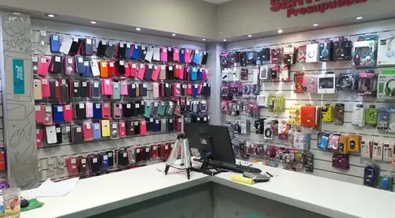

Nuestros Servicios

Reparacion de Celulares
¿Tu pantalla está rota o la batería dura poco? Dejalo en manos de profesionales. Ofrecemos cambio de módulos, reparación de pines de carga y solución a problemas de software en el acto y con garantía escrita.

Reparacion de Computadoras
Optimizamos tu equipo para que rinda al máximo. Realizamos limpieza física completa, cambio de discos a sólido (SSD), reinstalación de sistemas operativos y remoción de virus de manera rápida y segura.

Reparaciones de Televisores
Volvé a disfrutar de tus series y películas preferidas. Reparamos pantallas LED/Smart TV con fallas de encendido, problemas de imagen, sonido o retroiluminación. Presupuestos sin cargo.

Venta de accesorios y respuestos
Encontrá todo lo que necesitás en un solo lugar. Contamos con un amplio stock de fundas, cargadores rápidos, cables reforzados, vidrios templados y repuestos originales para proteger tu equipo.